Caguas · Desde 2002


Jendy's
El sabor más loco de Puerto Rico
Heladería artesanal familiar desde 2002. Sabores exóticos que no encuentras en ningún otro lado.
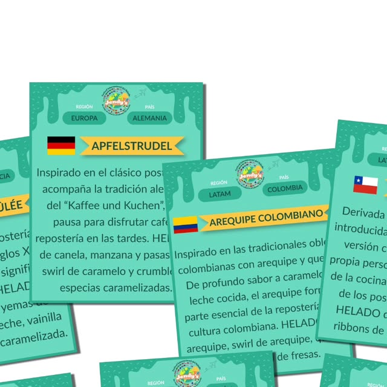
El sabor más loco de Puerto Rico
Heladería artesanal familiar desde 2002. Sabores exóticos que no encuentras en ningún otro lado.

Lo que hacemos
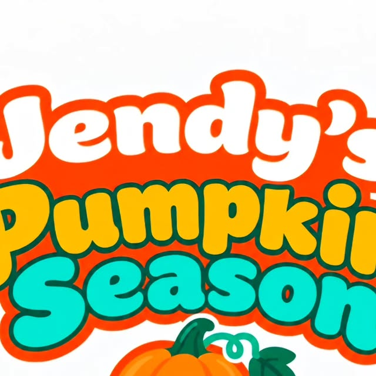

Ajo, calabaza, jengibre, arroz con habichuelas, queso crema y más.
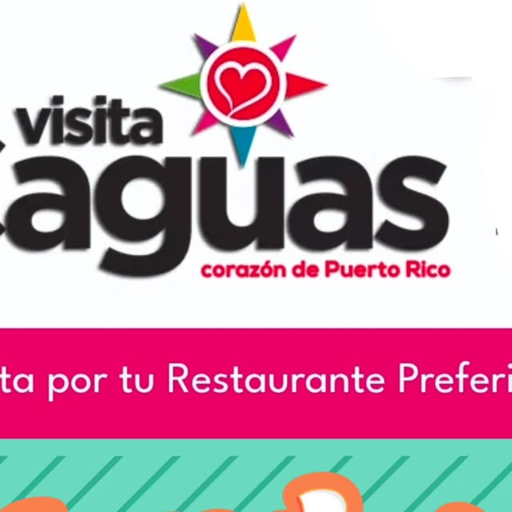
Sampler con 8 bolitas de distintos sabores para probar de todo.

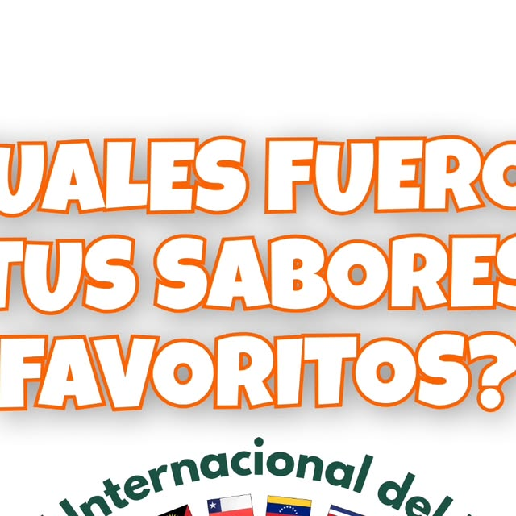
Opciones para todos: veganas y sin azúcar.
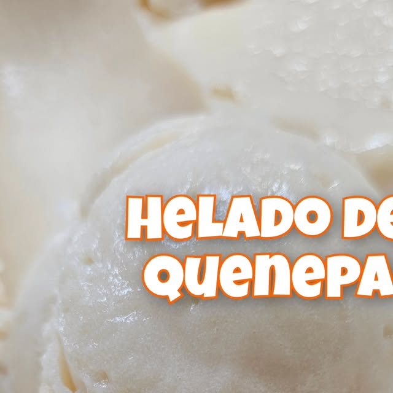
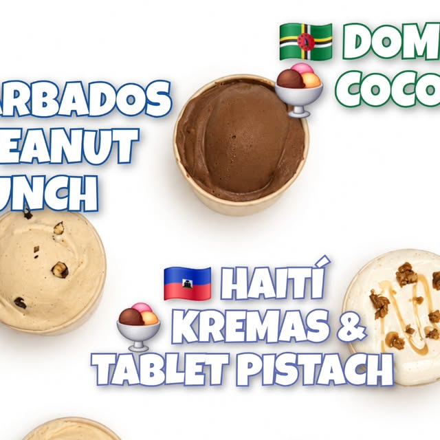
Coquito, turrón, quenepas y calabaza según la época.
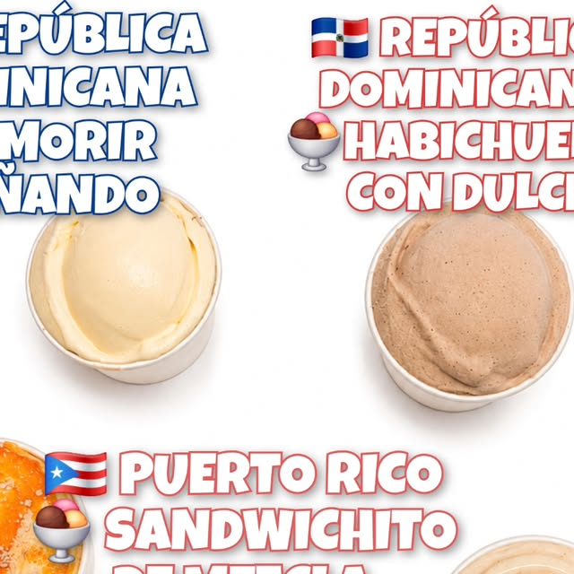
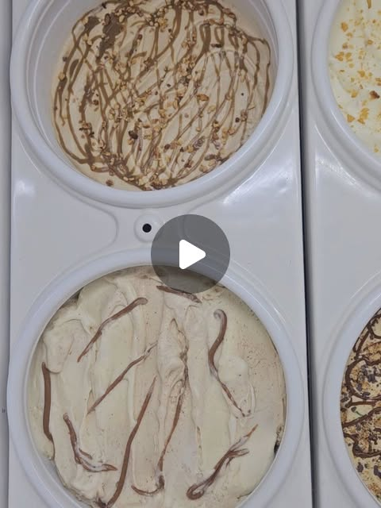
Batidas cremosas y mantecados hechos en casa.
Galería
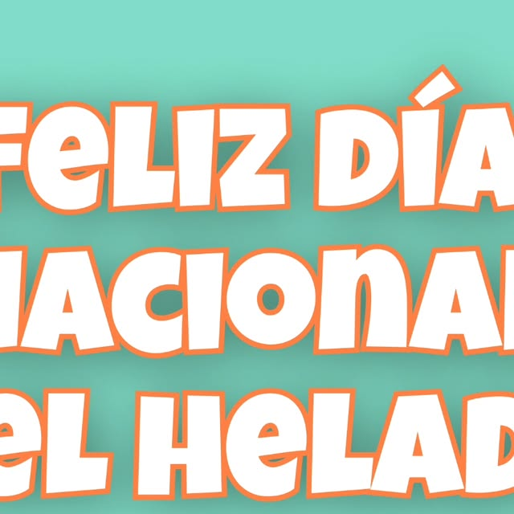
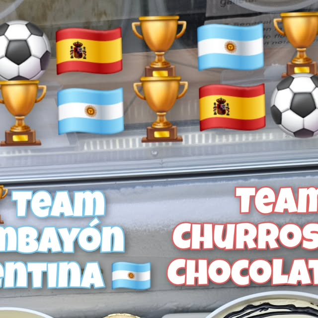
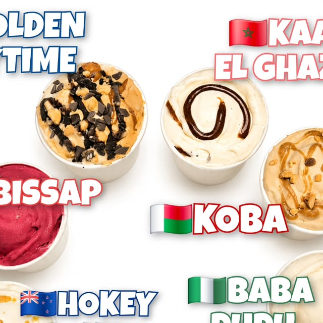
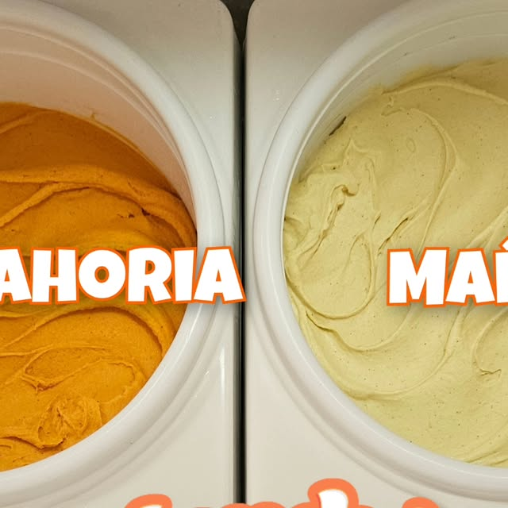
Quiénes somos
Heladería Artesanal Jendy's: empresa familiar en Caguas desde 2002. Helados artesanales en sabores exóticos como ajo, calabaza, jengibre y queso crema. Opciones vegan y sin azúcar. Ave. Luis Muñoz Marín, cerca de Costco. 787-745-1110.
Preguntas frecuentes
Estamos en Caguas, Puerto Rico.
Helados artesanales y más: Sabores exóticos, El Arcoiris, Vegan y sin azúcar.
Escríbenos por WhatsApp al 787-745-1110 o llena el formulario de contacto y te respondemos por WhatsApp.
Sí, síguenos en Instagram como @@jendysheladeriaartesanal.
Sí, tenemos sabores sin azúcar y opciones vegan, además de nuestros sabores exóticos artesanales.
Contacto
Llámanos o escríbenos: te atendemos al instante.